Quantum simulation of extended electron-phonon
coupling effects in a hybrid Rydberg atom system
João P. Mendonça and Krzysztof Jachymski
Quantum simulations

Sucess of rydberg atoms
Recent developments enabling trapped long-lived systems

Phys. Rev. Letters 128, 123601 (2022)
Recent developments enabling trapped long-lived systems

Phys. Rev. Letters 128, 033201 (2022)
Quantum symulations with hybrid systems
- Mixed species can increase complexity,
- Chemical mixtures,
- Going beyond effective Hubbard models,
- Atom-ion strong couplings,
- and more...
Previous proposals
Spin-Holstein Models in Trapped-Ion Systems

Phys. Rev. Letters 128, 120404 (2022)
Previous proposals
Spin-Holstein Models in Trapped-Ion Systems
$$ H_{eff} = \sum_n \Omega_n a^{\dagger}_n a_n + \sum_{i\neq j,\alpha=x,y} \frac{J}{|i-j|^3}\sigma_i^{\alpha}\sigma_j^{\alpha} + H_{int}, \\ H_{int} = -F_z\sum_{i,n} g_{in} (a_n + a^{\dagger}_n)(1+\sigma_i^z) $$Phys. Rev. Letters 128, 120404 (2022)
Previous proposals
Spin-Holstein Models in Trapped-Ion Systems
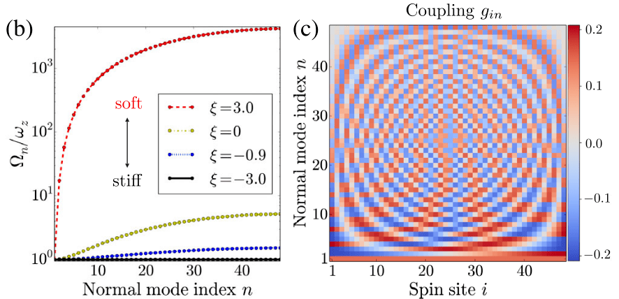Phys. Rev. Letters 128, 120404 (2022)
Previous proposals
Topological phenomena in trapped-ion systems
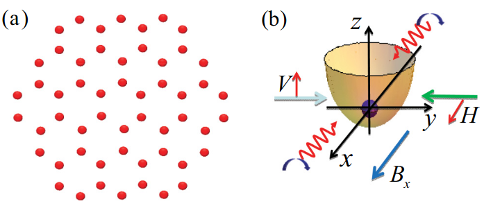Phys. Rev. A 87, 013606 (2013)
Previous proposals
Topological phenomena in trapped-ion systems
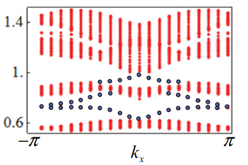 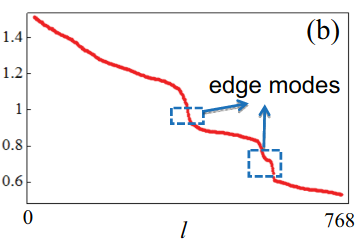Phys. Rev. A 87, 013606 (2013)
Previous proposals
Quantum simulations of extended Hubbard models with dipolar crystals

New Journal of Physics 11, 055045 (2009)
Previous proposals
Quantum simulations of extended Hubbard models with dipolar crystals
$$ M_q = \frac{g_{cp}}{a}\sqrt{\frac{2\hbar}{N m_c\omega_q}}|q|\beta_q $$

Previous proposals
Quantum simulation of extended polaron models using compound atom-ion systems
$$ M_{nj}/E^* = \frac{1}{N}\sqrt{\frac{E^* m}{\hbar\Omega_j M}}\sum_k \alpha(k) |k|R^* e^{ikR_{nj}}\frac{2m (R^*)^2}{a^e d} $$Phys. Rev. Research 2, 033326 (2020)
Previous proposals
Quantum simulation of extended polaron models using compound atom-ion systems
 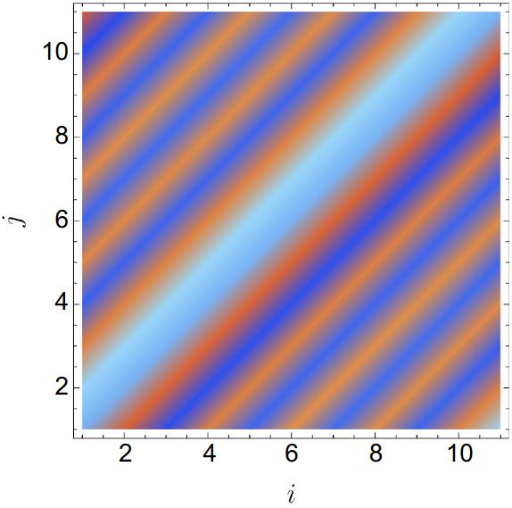
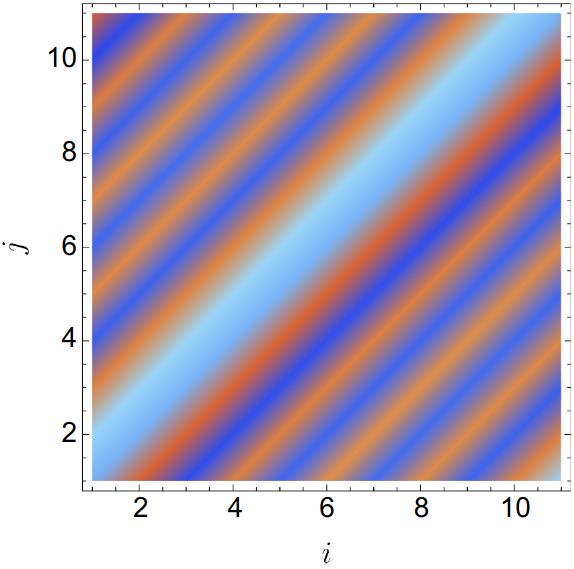Phys. Rev. Research 2, 033326 (2020)
Our proposal
Coupling Rydberg atoms with ground state atoms
Topological Rydberg lattice

Science 365, 775–780 (2019)
Topological Rydberg lattice
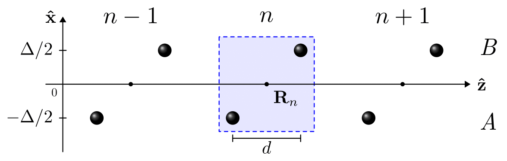- Reference points/cell positions: $\mathbf{R}_n=na\hat{\mathbf{z}}$;
- Basis: $\mathbf{\rho}_{A,B}^{\mathrm{tri}}= \mp \Delta/2\hat{\mathbf{x}} \mp d/2\hat{\mathbf{z}}, \\ \mathbf{\rho}_{A,B}^{\mathrm{top}}= \mp \Delta/2\hat{\mathbf{x}} \pm d/2\hat{\mathbf{z}};$
- Atoms positions: $\mathbf{R}_{n\alpha}(t)=\mathbf{R}_n + \boldsymbol{\rho}_{\alpha} + \mathbf{u}_{n\alpha}(t).$
Topological Rydberg lattice
$$ H = \sum_{j,\alpha} \frac{\mathbf{P}_j^2}{2M_j} + V^{\textrm{trap}} + \sum_i\sum_{j< i} U_{ij}, $$ where $$ V^{\textrm{trap}} = \frac{1}{2}\sum_{j} M_j[\boldsymbol{\nu}_j(\mathbf{R}_j-\bar{\mathbf{R}}_j)]^2, \\ U_{ij} = \frac{V_{\textrm{dd}}}{|\mathbf{R}_{ij}|^3}\left[1 - 3(\hat{\mathbf{m}}\cdot\hat{\mathbf{R}}_{ij})^2\right]. $$Topological Rydberg lattice
Potential energy in the harmonic approximation, $$ V\approx V_0 + \frac{1}{2}\sum_{nm}\sum_{\alpha\beta}\sum_{ij} u_{n\alpha i}D_{n\alpha i}^{m\beta j}u_{m\beta j}, $$ where $D_{n\alpha}^{m\beta}$ is given by the second derivatives at equilibrium, $$ D_{n\alpha i}^{m\beta j} = \frac{\partial^2 V}{\partial R_{m\beta j} \partial R_{n\alpha i}}\biggr\rvert_{\textrm{eq}}. $$Topological Rydberg lattice
The dynamical matrix elements are given by $$ \tilde{D}_{\alpha i}^{\beta j}(q_z)=\sum_n D_{\alpha i}^{\beta j}(\mathbf{R}_n)e^{iq_z na}, $$ and the dispersion relation (phonons!) is given by its eigenvalues.Topological Rydberg lattice:
Isotropic interaction: $\hat{\mathbf{m}}=(0,1,0)$
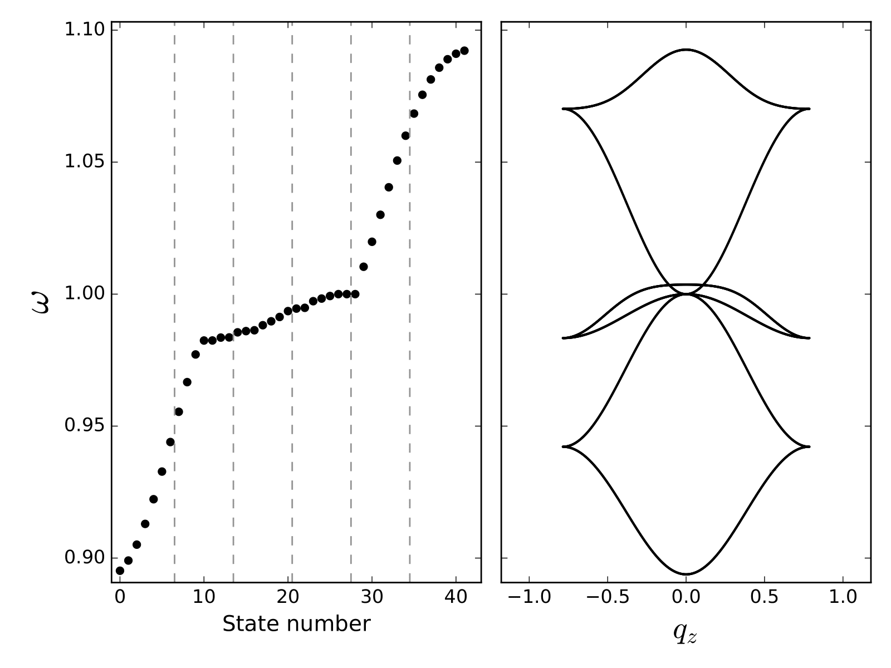 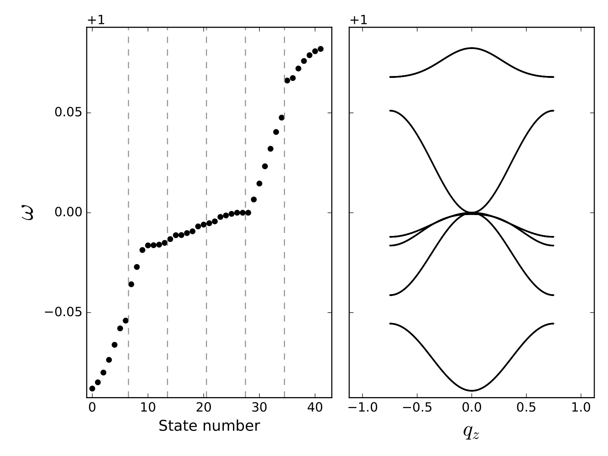Parameters: $N_c=14, d=4$.
Topological Rydberg lattice:
Anisotropic interaction: $\hat{\mathbf{m}}=(\mathrm{sin}\theta_m,0,\mathrm{cos}\theta_m)$
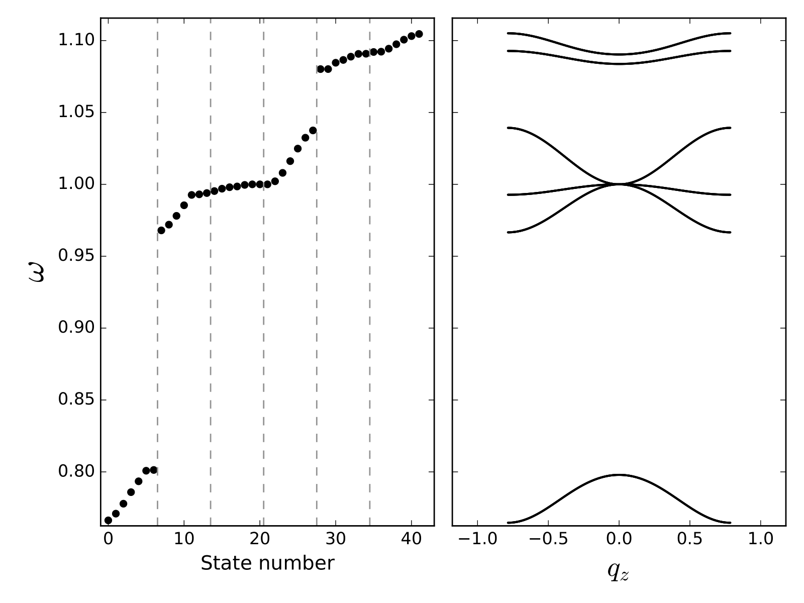
Trivial. Parameters: $N_c=14, a=4$(left) and $a=5$(right).
Topological Rydberg lattice:
Anisotropic interaction: $\hat{\mathbf{m}}=(\mathrm{sin}\theta_m,0,\mathrm{cos}\theta_m)$
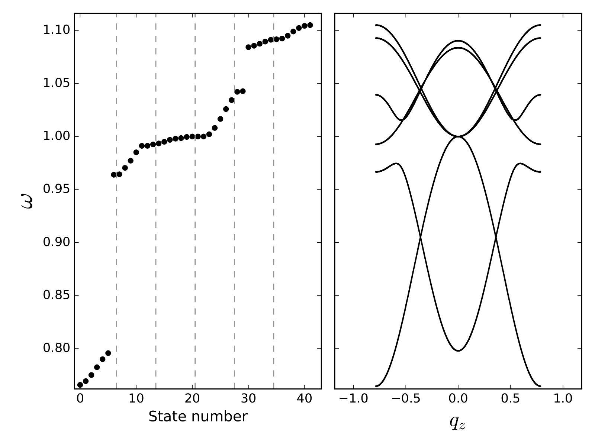 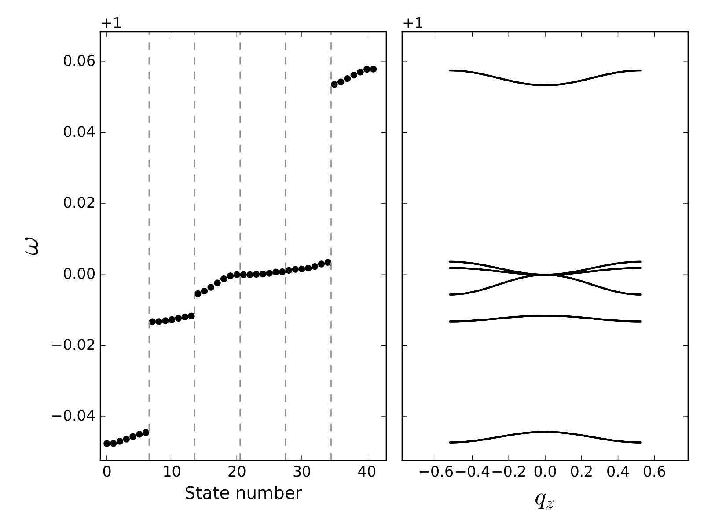Topological. Parameters: $N_c=14, a=4$(left) and $a=6$(right).
Coupling with ground state atoms
$$ H_I = \sum_i \tilde{V}(\mathbf{r}_i) \Rightarrow \int d \mathbf{r} \rho(\mathbf{r}) \tilde{V}(\mathbf{r}) \\ \tilde{V}(\mathbf{r}) = \sum_{n=1}^{N_c}\sum_{\alpha=1}^r V(\mathbf{r}-\mathbf{R}_{n\alpha}) $$Coupling with ground state atoms
$$ \tilde{V}(\mathbf{r}) = \sum_{n,\alpha} V(\mathbf{r} - \mathbf{R}_{n\alpha}^0 - \mathbf{u}_{n\alpha}) \approx \\ \sum_{n,\alpha} V(\mathbf{r}-\mathbf{R}_{n\alpha}^0) - \mathbf{u}_{n\alpha}\cdot \nabla_{\mathbf{R}_{n\alpha}}V(\mathbf{r}-\mathbf{R}_{n\alpha})\biggr\rvert_{\mathbf{R}_{n\alpha}^0} $$Coupling with ground state atoms
The interaction Hamiltonian is rewritten as, $$ H_I = \sum_{\mathbf{q},j,n,m} M_{\mathbf{q},j,n,m} \hat{c}_n^{\dagger}\hat{c}_m (\hat{b}_{j,\mathbf{q}} + \hat{b}_{j,\mathbf{-q}}^{\dagger}), $$ with $$ M_{\mathbf{q}jnm} = \sum_{\alpha} \sqrt{\frac{\hslash}{2NM_{\alpha}\omega_j(\mathbf{q})}} V(\mathbf{q}) \mathbf{q}\cdot\boldsymbol{\xi}_{\alpha}^{(j)}(\mathbf{q}) \gamma_{nm}(\mathbf{q}). $$Concluding remarks and next steps
- Rich and well-controllable phonon structure
- Possible extendend Hubbard-Holstein models
- Inherent difficulties of numerical e-ph coupling studies
- Time-dependent dynamics and their role with high-$T_c$ superconductivity